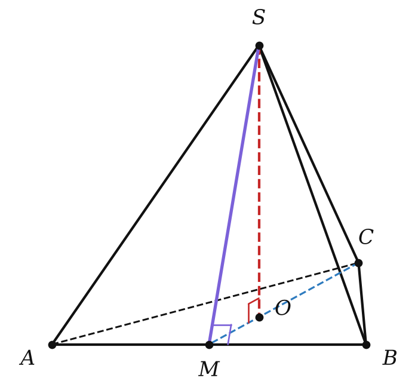
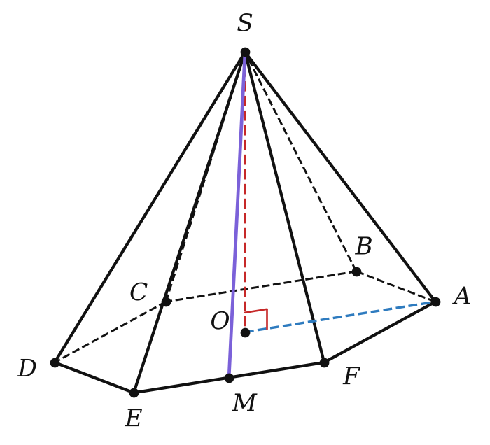

Теория
Что такое пирамида
Возьми многоугольник и точку вне его плоскости и соедини эту точку со всеми вершинами многоугольника. Получится «шатёр» — пирамида. Тетраэдр, который ты знаешь с главы I, — это треугольная пирамида.
Рассмотрим многоугольник A₁A₂…An и точку P, не лежащую в его плоскости. Соединив P с вершинами многоугольника, получим n треугольников PA₁A₂, PA₂A₃, …, PAnA₁. Многогранник, составленный из n-угольника и этих треугольников, называется n-угольной пирамидой.
Многоугольник — основание, треугольники — боковые грани, точка P — вершина пирамиды, отрезки PA₁, …, PAn — боковые рёбра.

Перпендикуляр, проведённый из вершины пирамиды к плоскости основания, называется высотой пирамиды. Его длину тоже называют высотой и обозначают h.
Основание высоты H может оказаться внутри основания, на его стороне или даже вне основания — смотря какая пирамида. Площадь полной поверхности пирамиды: Sполн = Sбок + Sосн (основание одно!).
Куда падает высота
Очень полезный факт для задач: положение точки H часто можно найти заранее.
Если все боковые рёбра пирамиды равны, то основание её высоты — центр окружности, описанной около основания.
Пусть PH — высота и PA₁ = PA₂ = … = PAn. Треугольники PHA₁, PHA₂, … прямоугольные (PH ⊥ плоскости основания), у них общий катет PH и равные гипотенузы. Значит, они равны по гипотенузе и катету, и HA₁ = HA₂ = … = HAn. Точка H равноудалена от всех вершин основания — это центр описанной окружности. ∎
Обратное тоже верно: если H — центр описанной окружности, то боковые рёбра равны (равные проекции ⟹ равные наклонные, урок 8). Аналогично: если все боковые грани наклонены к основанию под одним углом, то H — центр вписанной окружности.
Правильная пирамида
Пирамида называется правильной, если её основание — правильный многоугольник, а отрезок, соединяющий вершину пирамиды с центром основания, является её высотой.
Центр правильного многоугольника — это одновременно центр вписанной и описанной окружностей. Для квадрата это точка пересечения диагоналей, для правильного треугольника — точка пересечения медиан (она делит медиану в отношении 2 : 1, считая от вершины).


Боковые рёбра правильной пирамиды равны, а боковые грани — равные равнобедренные треугольники.
Пусть SO — высота, O — центр основания. Тогда OA₁ = OA₂ = … = R (радиус описанной окружности). Прямоугольные треугольники SOA₁, SOA₂, … равны по двум катетам, поэтому SA₁ = SA₂ = … — боковые рёбра равны.
Каждая боковая грань — равнобедренный треугольник (две стороны — равные боковые рёбра), а основания граней — равные стороны правильного многоугольника. Значит, грани равны по трём сторонам. ∎
Высота боковой грани правильной пирамиды, проведённая из её вершины, называется апофемой. Обозначим её m.
Все апофемы правильной пирамиды равны (грани равны). Апофема SM падает в середину M стороны основания (в равнобедренном треугольнике высота — медиана). По теореме о трёх перпендикулярах OM ⊥ стороне, т. е. OM = r — радиус вписанной окружности основания. Получаем два «рабочих» прямоугольных треугольника:
| Треугольник | Катеты | Гипотенуза | Острый угол при основании |
|---|---|---|---|
| SOM | h и r | апофема m | угол боковой грани с основанием φ |
| SOA | h и R | боковое ребро l | угол бокового ребра с основанием |
Не путай апофему с высотой пирамиды и с боковым ребром! Апофема SM лежит в боковой грани, высота SO — внутри пирамиды, боковое ребро SA — на стыке граней. Всегда h < m < l.
Площадь боковой поверхности правильной пирамиды
Площадь боковой поверхности правильной пирамиды равна половине произведения периметра основания на апофему: Sбок = ½ P · m.

Боковые грани — равные треугольники; основание каждого — сторона основания a, высота — апофема m. Площадь одной грани ½ a · m.
Граней n: Sбок = n · ½ a · m = ½ (na) · m = ½ P · m. ∎
Ещё одна формула. Если боковые грани правильной пирамиды наклонены к основанию под углом φ, то Sбок = Sосн / cos φ. Почему: из треугольника SOM r = m cos φ, а площадь правильного многоугольника Sосн = ½ P · r (сумма n треугольников с вершиной O). Значит, Sосн = ½ P · m · cos φ = Sбок · cos φ.
В формуле ½ P · m стоит апофема, а не высота пирамиды. И формула верна только для правильной пирамиды: в неправильной грани разные, их площади считают по отдельности.
Разбор примеров
Сторона основания правильной четырёхугольной пирамиды равна 6, высота 4. Найди апофему, боковое ребро, площади боковой и полной поверхности.
O — центр квадрата, OM = r = 3 (половина стороны). Из треугольника SOM: m = √(16 + 9) = 5.
OA = R = 3√2 (половина диагонали). Из треугольника SOA: l = √(16 + 18) = √34.
Sбок = ½ · 24 · 5 = 60, Sполн = 60 + 36 = 96.
Сторона основания правильной треугольной пирамиды равна 6, высота 1. Найди апофему, боковое ребро и площадь боковой поверхности.
Высота (медиана) основания 6 · √3/2 = 3√3. Центр делит её в отношении 2 : 1: r = OM = √3, R = OA = 2√3.
m = √(1 + 3) = 2, l = √(1 + 12) = √13, Sбок = ½ · 18 · 2 = 18.

Сторона основания правильной шестиугольной пирамиды равна 4, боковое ребро 5. Найди высоту и площадь боковой поверхности.
У правильного шестиугольника R = a = 4. Из треугольника SOA: h = √(25 − 16) = 3.
Апофему удобно найти из боковой грани — равнобедренного треугольника со сторонами 5, 5, 4: m = √(25 − 4) = √21. Sбок = ½ · 24 · √21 = 12√21.
Сторона основания правильной четырёхугольной пирамиды 6, боковые грани наклонены к основанию под углом 60°. Найди площадь боковой поверхности.
Способ 1. Sбок = Sосн / cos 60° = 36 / 0,5 = 72.
Способ 2. В треугольнике SOM r = 3 — катет при угле 60°, апофема m = 3 / cos 60° = 6. Sбок = ½ · 24 · 6 = 72. Ответы совпали.
GeoGebra
- Pyramid(Polygon((0,0),(6,0),4), 4)
правильная четырёхугольная пирамида из примера 1 (основание — квадрат 6 × 6, высота 4) - Distance((3,0,0), (3,3,4))
апофема из примера 1: расстояние от середины стороны до вершины — должно получиться 5 - Net(Pyramid(Polygon((0,0),(6,0),4), 4), t)
развёртка с ползунком t: боковые грани раскладываются в «веер» из равных треугольников
Задачи урока
Реши в тетради, к каждой задаче — чертёж. Разберём на занятии.
Тест к уроку
Домашнее задание
Задачи Д1–Д6 ниже. К каждой задаче — чертёж с выделенным «рабочим» треугольником. Выучить определения правильной пирамиды и апофемы, теорему о площади боковой поверхности правильной пирамиды с доказательством.